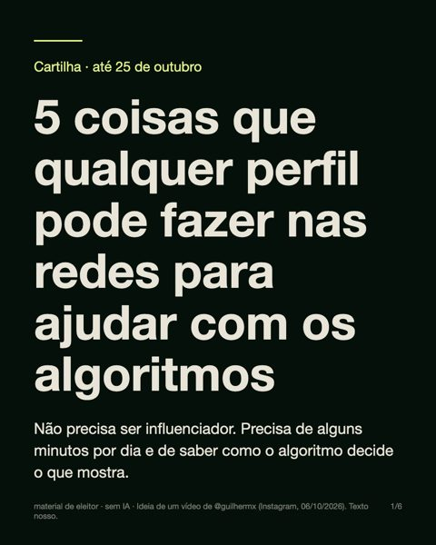

Informações úteis
Como ajudar nas redes, o que pode e o que não pode, onde votar e onde denunciar.
5 coisas que qualquer perfil pode fazer nas redes
Não precisa ser influenciador. Precisa de alguns minutos por dia e de saber como o algoritmo decide o que mostra.
- Assista aos vídeos de interesse da campanha até o fim.
O algoritmo mede quanto tempo você fica num vídeo. Vídeo visto até o fim chega a mais gente.
Não passe direto: comente. Comentário, mesmo de briga, faz o vídeo circular.
- Compartilhe no privado, por DM, não só nos stories.
Story chega em quem já pensa como você, e muita gente pula. Envio por mensagem direta pesa mais para o algoritmo.
Mande para uma pessoa de cada vez, com uma frase sua: “já viu este?” ou “vi isso e lembrei de você”.
- Use o repost.
O botão de repost põe o vídeo no feed de quem te segue, como um post qualquer, sem a sua cara na frente.
É mais fácil alguém assistir o que aparece no feed do que o que vem marcado como “indicação de amigo”.
- Siga, curta e comente.
Interagir com perfis que defendem a democracia ajuda o conteúdo deles a circular.
- Não dê palco a quem vive de absurdo.
Deixe de seguir. Não compartilhe o vídeo deles, nem para criticar: cada visualização bota o vídeo para circular mais.
Passe direto, sem dar atenção.

As 5 dicas em imagens, para postar em sequência no feed ou nos stories.
Baixar o carrosselzip, 1,2 MB, feed e storiesPosso mandar e postar?
Pode. Qualquer eleitor pode dizer o que pensa de um candidato na internet, do próprio perfil, com o próprio nome.
O que não pode
- Pagar para impulsionar post. Só partido e candidato podem.
- Usar lista de disparo em massa ou robô.
- Criar perfil falso.
- Ofender a honra de alguém ou espalhar o que não é verdade.
- Montagem ou inteligência artificial com rosto ou voz de candidato. De 22 a 26 de outubro, nenhum conteúdo novo assim, nem com aviso.
Posso imprimir e colar?
Em parede ou muro particular, com autorização do dono, até meio metro quadrado. Em poste, muro público, praça e ônibus, não. Panfleto que você mandar fazer em gráfica leva o CPF de quem mandou fazer e a quantidade impressa.
No dia da eleição, 25 de outubro
- Pode: camiseta, adesivo, broche ou bandeira, em silêncio, sozinho.
- Não pode: boca de urna, panfleto, carreata, nem publicar conteúdo novo de campanha.
- O celular não entra na cabine. Pode levar uma cola em papel.
Onde eu voto?
No aplicativo e-Título, em “Onde votar”, ou no site do TSE. Leve um documento oficial com foto. Se estiver fora da sua cidade, justifique pelo e-Título no dia, das 8h às 17h.
Viu uma mentira ou propaganda irregular?
- Mentira sobre a eleição: denuncie no Siade, do TSE. Pode ser anônimo.
- Propaganda irregular: aplicativo Pardal, com login do e-Título ou gov.br.
- Antes de passar adiante, confira no Fato ou Boato da Justiça Eleitoral ou numa agência de checagem: Aos Fatos, Lupa, Comprova, Fato ou Fake, Estadão Verifica, UOL Confere.
Resumo das regras do TSE para quem é eleitor, não candidato. Na dúvida, pergunte ao TRE do seu estado.
Material de eleitor. Cada peça traz a fonte do fato. Feito com código, sem IA.